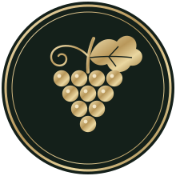

写真クレジット
| 畑で実るシャインマスカット | 「シャインマスカット」黒崎一男／CC BY-SA 4.0（縮小して掲載。画面の大きさにより一部を切り抜いて表示） |
|---|---|
| 器に盛ったシャインマスカット | 「Shine muscat grapes」Scudsvlad／CC BY-SA 4.0（縮小して掲載。一部を切り抜いて表示） |
| 巨峰 | 「包装の巨峰、横須賀」CC0（切り抜いて掲載） |


いずれも Wikimedia Commons より。掲載写真はイメージであり、当園の商品を撮影したものではありません。

武川農園MUKAWA FARM トップへ戻る| 畑で実るシャインマスカット | 「シャインマスカット」黒崎一男／CC BY-SA 4.0（縮小して掲載。画面の大きさにより一部を切り抜いて表示） |
|---|---|
| 器に盛ったシャインマスカット | 「Shine muscat grapes」Scudsvlad／CC BY-SA 4.0（縮小して掲載。一部を切り抜いて表示） |
| 巨峰 | 「包装の巨峰、横須賀」CC0（切り抜いて掲載） |
いずれも Wikimedia Commons より。掲載写真はイメージであり、当園の商品を撮影したものではありません。